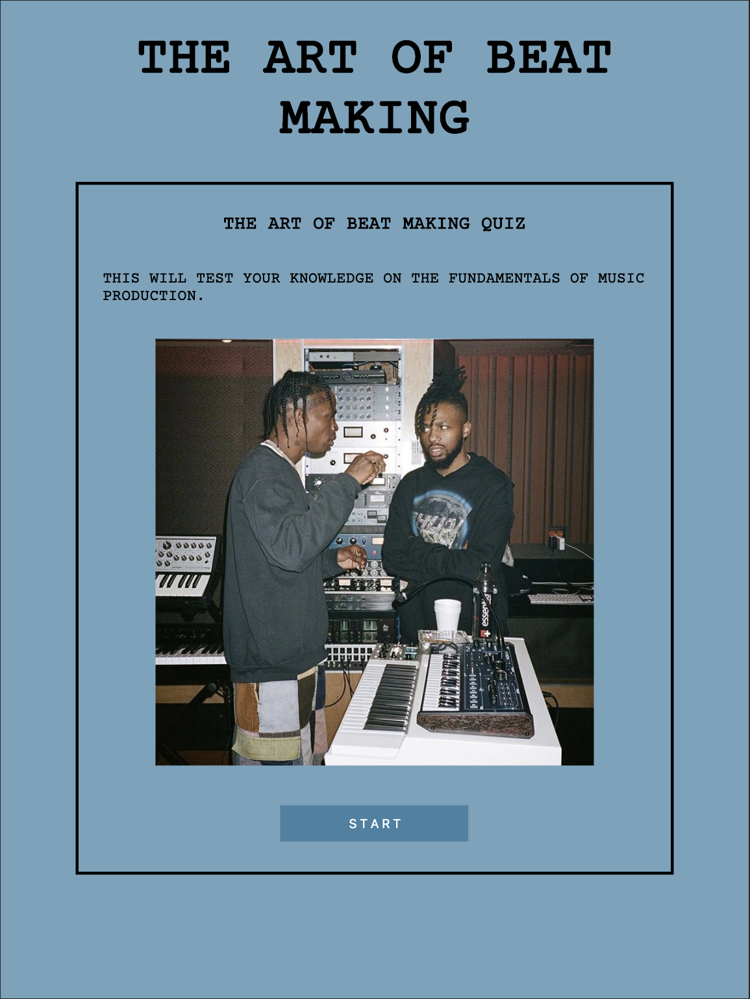

Hi! My name is Dynn Beronque and I'm a fullstack developer.
About Me
I am a recent graduate of Thinkful’s Engineering Flex program and a lover of all things involving technology.
I relish the process of generating and evolving the dynamics of webpages to its simplest form without
sacrificing the properties needed. I work well with HTML5, CSS3, Javascript, and jQuery; additionally,
I have great communication and leadership skills that can help create a relaxed yet highly productive environment.
The idea of living in a world that progresses human life with the use of tech is what drives me to keep
learning and a reminder to be brave and push the boundaries in my work. During my down time I enjoy
producing music, falling from the sky at 110 miles per hour,
and draining three point shots in a pickup basketball game.
Projects
The Art Of Making A Beat
The Art of Making A Beat is a quiz app that will test the users knowledge on the fundamentals of beat making. The user goes through a set of 7 questions and can reset the quiz once finished.



Contact Info